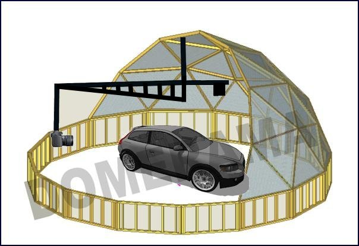

This article is about using a geodesic dome along with a few other items and turning them into a professional quality photography studio to create interactive 360-degree product presentations.
The Internet is a great medium for making graphics come alive. One way is 360-degree interactive product photography: you can take pictures around a product or object and with software, organize the images to make a 360, interactive presentation. An example of this technique is the back pack below created with Yofla’s 3D Rotate. Try it on the author’s home page: drag the product and make it spin manually, zoom in or out. You can also click on hot spots for additional product details.
- Click on the image to view a 360 degree product presentation
The key to professional results to create 360 interactive product presentations is to have total control of the process. By this we mean there are strict rules for 360 product photography:
- Every photograph must be the same distance from the center
- No up or down movement of the camera; every photograph should be from the same height
- Make sure you have an even background, in color, texture and lightning
- Take pictures at equal intervals such as every 20 degrees (which would take 18 images for a full circle
A geodesic dome does let you respect those rules, and at a fraction of the cost of a professional setup. It seems difficult but it is pretty simple if you have some patience at the beginning, and the final result makes it worthwhile.
Inexpensive and professional results
This is a very effective and low-cost solution to sell something online when people cannot see it in person. The more expensive the product is, the more difficult it is to describe features to create an emotional connection, because that generated emotional state is what helps close the deal. A very good example the effectiveness of 360 photography is with jewelry, and watches are a classic example.
Our 360 interactive product solution in detail
In the backpack animation the product rotates and photographs are taken. In our version it is reversed: the product remains in place and the camera rotates around it.
In our case we aim to use 360 for other types of products, namely cars and other large items such as motorcycles and small tractors. The concept is simple enough: A geodesic dome on a riser wall with a center boom rotating around a central point of the geodesic dome. The riser wall also serves to hold a photographic background around the entire perimeter since you move around the object.

A 360 geodesic photography dome studio can be made to almost any dimension, it can be dismantled and transported, and let you produce results that rival those of a very expensive studio production. The role of the dome is to support and let rotate a boom with a camera at the outer end and hold in place a continuous background.
The boom is the key
The one aspect to focus on is how to secure the camera to the vertical part of the rotating boom. For this we suggest using a professional solution (i.e. a plate to hold the camera in place, preferably also with a quick release feature
On the opposite end of the boom you will need to add a counterweight for the weight of you camera and the boom itself. If your setup tends to make the camera move up and down, you can install a circular track on the floor and extend the vertical piece (the one with the camera) all the way down to the rail. To avoid any movement you can use rail systems available in hardware stores: it’s like assembling an upside down closet door.
The section holding the boom to the dome may require some professional work to be done. But for those with extra garden furniture around the home, you can use a patio umbrella base (we suggest a metal one with a large opening), turn it upside down and then insert your boom into it |(look at the image below). Then you attach the umbrella base to the geodesic dome frame.
This is an example of a boom used to attach to a geodesic dome.
The boom can be made of any metal, though we recommend that you make one out of aluminum for a solid and lightweight solution. Your main (horizontal) boom section will look like a crane. Since you will want to photograph large objects, you will require a long boom, and so the lighter the metal, the better.
Another factor to keep in mind: if you have a basic setup you can position the camera at the exact same place every time and start shooting. If you choose to photograph a product in 360 that is much smaller (example a motorcycle instead of a truck), you don’t need to physically move the camera; use a zoom lens instead. Remember, the less moving parts in your setup, the better things will go.
If you wonder why we do not give precise measurements for a dome or a boom, it’s because everyone’s needs will be different. We can however suggest that a 36-40 foot (11-12 meter) dome will accommodate almost any size of item and enough room for you to move around comfortably.
So what does it look like when completed?
Click here or on the image below for a 360 view of the Nissan Leaf. The 360 is advanced: images were shot from different heights to give a sleek effect. Unless you have the budgets Nissan has for marketing, do not attempt this.
This example demonstrates one thing clearly: once you have photography completed, the rest is editing on the computer. If you have basic graphics skills and software such as Yofla’s 3D Rotate to create the 360 interactive product presentation, you can achieve something quite impressive on a budget.
Click to view a 360 interactive product presentation of the Nissan Leaf


{kind=link}
{kind=link}
{kind=link}
{kind=link}
{kind=link}
{kind=link}
{kind=link}
{kind=link}
{kind=link}
{kind=link}